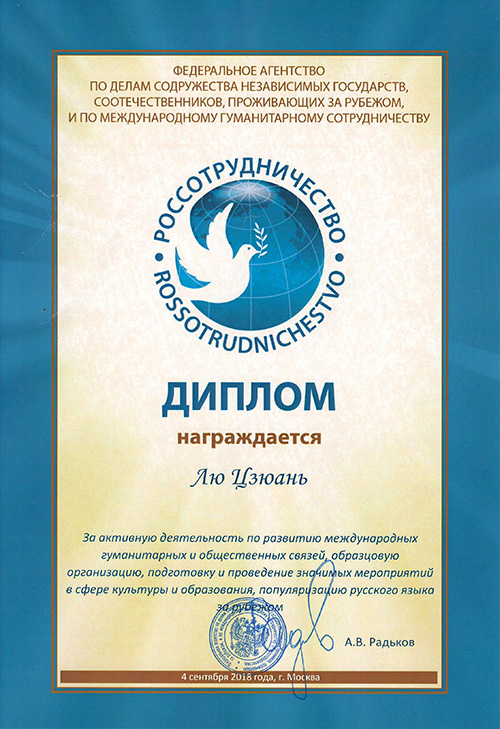
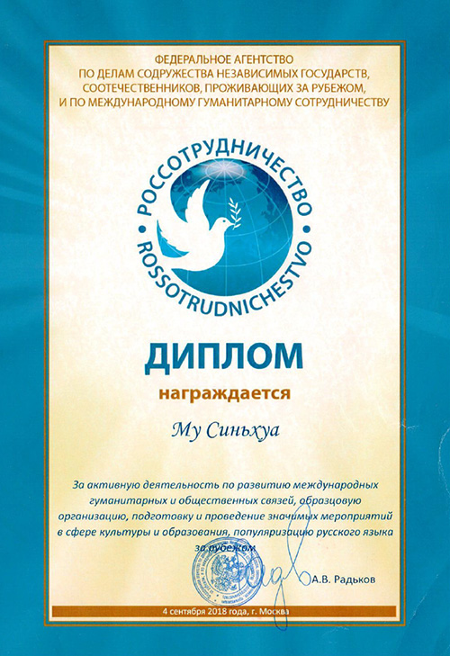

历史沿革
1949年2月17日 北平和平解放，北平改称北京，学校也相应更名为北京师范大学。英语系改称外语系，内设英语、俄语两个教学组。1952年 北京师范大学与辅仁大学合并，撤消了外语系改为俄语系。
1960年 学校决定恢复英语专业，俄语系再度更名为外语系。
1972年 中日邦交正常化，重建日语专业。
2002年12月 外国语言文学学院成立。
专业实力
北师大俄文系建系至今已有七十年，侧重于俄语语言文学研究。北师大俄文系以规模小、教学精闻名，因历届规模甚小而在公共排名中不占优势。其人才培养质量和学术水平在全国高校名列前茅，毕业生在各行各业中均享有良好的社会声誉。被业内评价为学科实力仅次于北京外国语大学俄语学院的又一高地。现由北师大俄文系主办国内外公开发行的著名学术性刊物《俄罗斯文艺》，并下设教育部区域和国别研究培育基地俄罗斯研究中心，其学术与科研能力可见一斑。
近期新闻
近日，俄文系系主任穆新华副教授、俄罗斯研究中心主任及外文学院党委书记刘娟教授在俄罗斯文化中心接受“俄罗斯联邦国际人文合作属”颁发的荣誉证书。俄罗斯联邦科学与教育部副部长 Марина Александровна Боровска 女士受“国际人文合作属”委托向获奖者颁发证书。该奖项的设立旨在表彰在促进国际人文合作，出色组织、策划、开展具有影响力的重大活动，积极普及俄语和推广俄罗斯文化方面做出突出贡献的人员。


(上图为获奖证书)